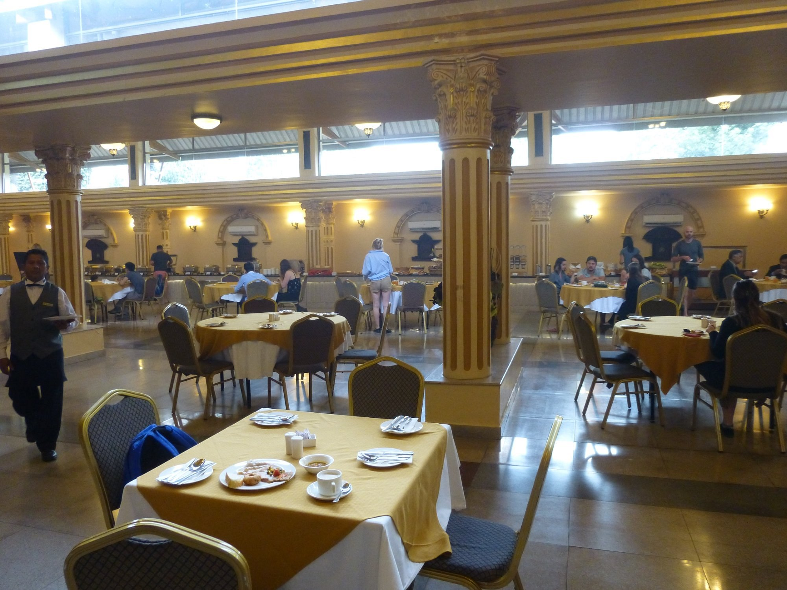
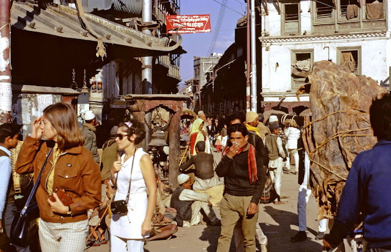
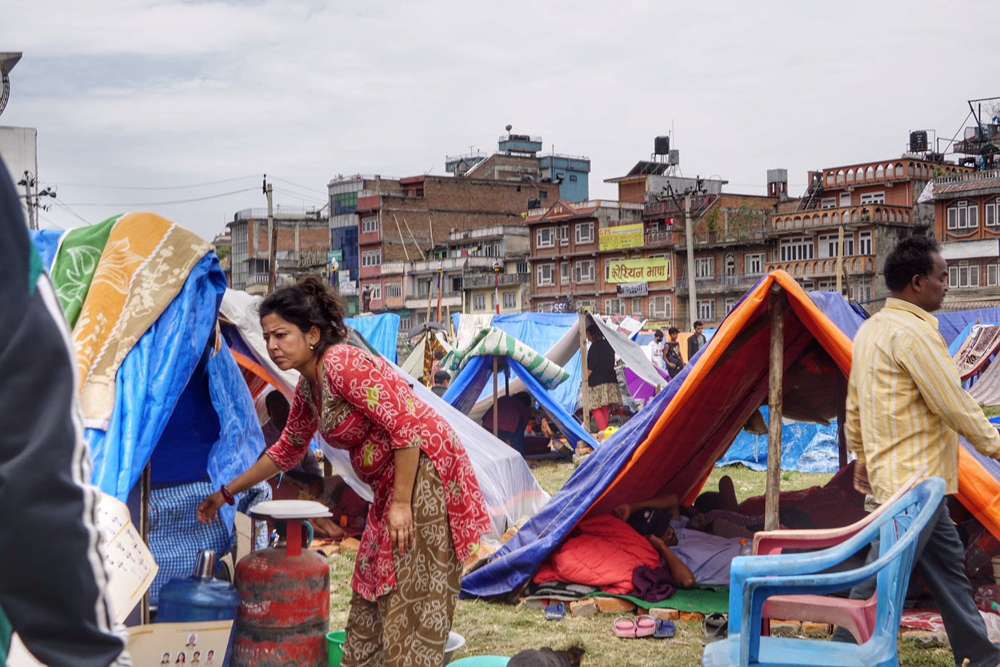
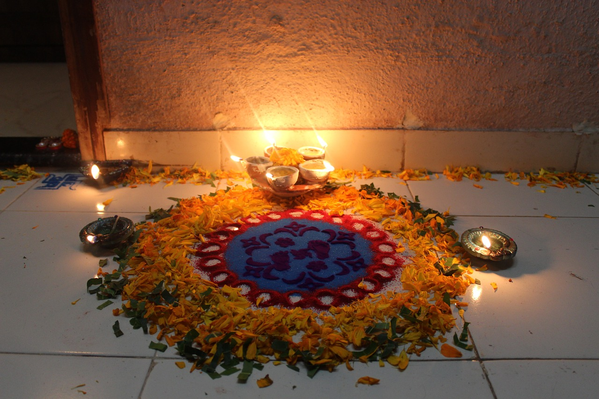

My final destination for the year was Nepal in an effort to discover more about the oldest religion in the world, Hinduism. I stayed relatively around Kathmandu this time as there was so much to see. The city has amazing architecture, with Buddhist and Hindu temples coexisting in the same place, giving the city a unique mix of architectural styles everywhere you look. I had the wonderful opportunity of meeting Mr. Thapa, who guided me around the place when I first arrived.
I have to mention this hotel I stayed in though, Hotel Shanker. My goodness, that hotel was fancy, it was once a palace after all. They served breakfast in the ballroom! The place itself was extremely quiet and calm which is a great break from the action outside in Kathmandu. I recommend it.

It's the super runner Mr. Thapa!
Mr. Thapa is one of the most athletic people I've seen in my life! He is an amazing marathon runner as well as an extremely wise mentor. He is currently trying to get his grandchildren to run with him in the Nepalgunj Marathon, but they don't want to. Maybe I can try to convince them too. He is also very well versed in Hinduism as he actually taught theology before he retired. He was very helpful to me whenever I had any questions about Hinduism.

Creed
Mr. Thapa recommended me to a yoga retreat at the Nepal Yoga Home if I wanted to learn more about the beliefs of Hinduism. I took the One Night Two Days Yoga Retreat Package, which took me to the Nagarjun National Park in Kathmandu. The environment was incredibly serene and overall a lovely place to just let go and just meditate. The teachers were extremely welcoming and knowledgeable, eager to answer my questions about Hinduism, not to mention the great food (did I mention that it was great?). I definitely got a lot out of the retreat. I was eager to tell Mr. Thapa about it when he was available.
When the time came, Mr. Thapa told me how yoga was a way in which Hindus can reach brahman which, in Mr. Thapa's words, is existence itself. It's quite different from salvation in Christianity, as it does not really have a definite descriptor, but Mr. Thapa described it as best as he could as “everything, the ultimate reality, you are brahman, I am brahman, this world is brahman”. This is what all Hindus have in common. Mr. Thapa did make sure that I understood that Hindus do not exactly have a set creed, every Hindu practices and interprets Hinduism in their own way, even choosing themselves which deities they choose to worship. One can freely choose their own path as a Hindu. What a great start to this trip!
Code
I was invited by Mr. Thapa to tag along and help him give care packages to the homeless, which he does monthly. There are over 200,000 homeless people in Nepal, the situation worsening as populations rise while standards of living lag behind. We went around areas of Kathmandu Valley while Mr. Thapa talked to me about the importance of doing good deeds, especially in Hinduism. He told me that doing punya, meaning good deeds, to get good karma. Hindus believe that enough good karma would break them out of samsara or the cycle of reincarnation where they reach brahman.

All this can be summarized into dharma, all the laws that Hindus follow to conduct a good life. Mr. Thapa made an important distinction to me, however, that he does these deeds out of the good of his heart. He does not give in order to get something in return, which is one of the principles in the path of yoga that he follows, Karma Yoga. Hindus follow one of four yogas of Hinduism, which each have their own guidelines on reaching liberation. Mr. Thapa went with this one as it aligned with his own morals and overall was a practical yoga considering his current living situation. Karma Yoga and Bhakti Yoga are two of the most popular yogas in Hinduism.
Mr. Thapa's charity is incredibly commemorable. Taking the time to create thirty packages and carrying them around on his own takes great dedication and care. It's wonderful how Hinduism, too, is based on achieving dharma, conducting good deeds, maintaining self-discipline—righteousness in general. It allows followers to strive towards improving themselves, as well as supporting the good that they do already.
Cult
I got to meet Mr. Thapa's children, Bishal and Shanti, as they were very intrigued about the person (me) who met their father. They were really happy that I wanted to explore Hinduism and invited me to visit the Gorakhnath Mandir with them. Unfortunately, when the time came, only Mr. Thapa's son only accompanied me to the mandir, as women cannot enter a mandir while on their menstrual cycle.
When entering the mandir, I had to take off my shoes, which was not much of a shock to do, rather more homely, as I do the same at home. I immediately heard the “aum” sound as I entered. Bishal explained that it was the sound of brahman. There were statues of many deities in the mandir, called murti, which included Shiva, Ganesh, Bhairava and Kali. People would individually pray. I would observe them walking clockwise around the shrine as well as ring a bell. Most prominently, there was not much of a congregation. People did this on their own, whenever they were available to, hence why it was not much of a disturbance to respectfully observe. The place itself was super calming and beautiful, I recommend anybody visiting Kathmandu to stop by.
Community
I came to Nepal around this time in order to catch the celebration of Diwali. However, I learned from Mr. Thapa that Diwali is more commonly known as Tihar in Nepal. The celebration itself lasts five days, which is from November 1 to November 5 for this year. The celebration itself is in honour of Yama, the God of Death, but people worship Lakshmi, the Goddess of Wealth. On the first day, I helped Mr. Thapa take the seeds he collected and disperse them across the street. This attracted some crows, which are believed to be messengers of messengers of Yama. As crows are believed to be messengers of bad news in Hinduism, offering these seeds is a way to ask them not to do so for the year.
After the first day, I was only able to celebrate the third day of Tihar, Gai Tihar, which was luckily considered the most important day out of the five. It is a day of worship for the cow, one of the most sacred animals in Hinduism. Mr. Thapa made an effort to point out these stray cows on the streets of Kathmandu—they are not allowed by law to kill them. Quite the opposite today, the whole morning is dedicated to offerings and prayers to the cow. In the evening, people prayed to Lakshmi. The displays of lights were wonderful, the cows too, being decorated with flowers. This festival marked the end of my trip, and what a beautiful sendoff it was.

Final Thoughts
I learned so much about Hinduism on this trip to Nepal. I'm extremely grateful for Mr. Thapa and his children for their unconditional kindness towards me for the whole time I was there. Without them I wouldn’t have been able to fully experience the essence of Kathmandu, I thank them.
I will join you one day on a marathon Mr. Thapa, I promise!